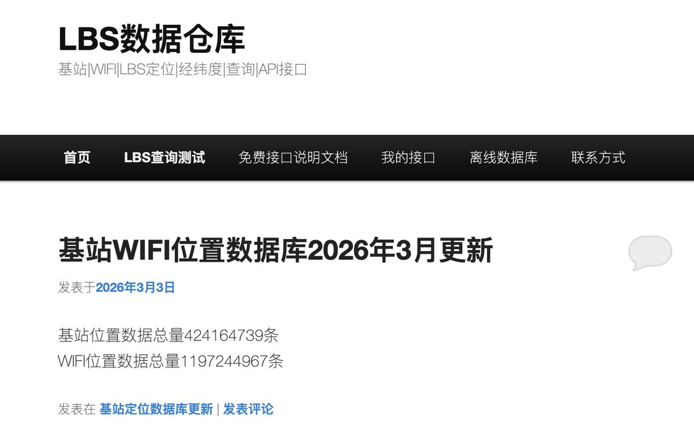
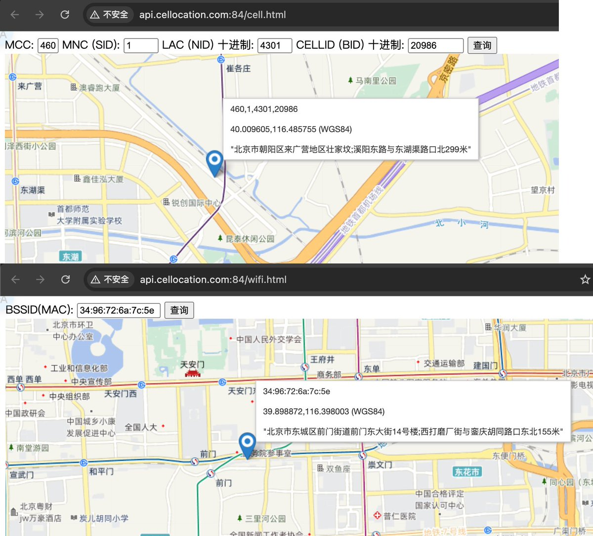
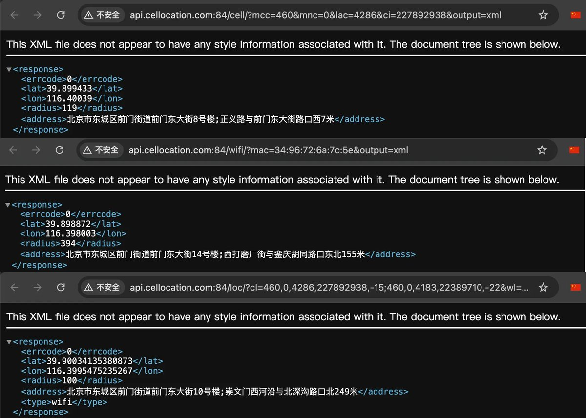

原来台式机没有GPS模块也能靠WiFi定位？我访问了北京竞心科技有限公司的LBS仓库（https://t.co/PgmXt6r7dS），根据自己的相关信息查询了下，得到的结果相当精准！
不仅有国内基站、WiFi正反查询，还有经纬度转换接口，可以把加密的GCJ02（火星坐标系）转到未加密的WGS84（世界大地测量系统），解决偏移问题。
这些数据源匪夷所思，这种小公司若是开着一台测绘车接收数据那也不止，跑遍全国再算上人力成本纯纯不可能。唯独能想到的是有厂商无线网卡在扫描周围无线WiFi信号时进行上报，或是国内部分SDK（像是美团的接口）泄露得来。我才在想，公司搬到新场地后，员工连WiFi点餐的位置都还在原地区，令人细思极恐。
如果假设成立，那么判断你是哪里人就非常容易了。像Cellular-Z这类测试软件，在取得电话权限后就可以知道本机的关键信息，足以配合上述的接口完成基站定位。连极度受限的浏览器，都可以通过WebRTC获取真实IP，以User-Agent判断时区和语言，最基础的用户画像就组好了。
不仅有国内基站、WiFi正反查询，还有经纬度转换接口，可以把加密的GCJ02（火星坐标系）转到未加密的WGS84（世界大地测量系统），解决偏移问题。
这些数据源匪夷所思，这种小公司若是开着一台测绘车接收数据那也不止，跑遍全国再算上人力成本纯纯不可能。唯独能想到的是有厂商无线网卡在扫描周围无线WiFi信号时进行上报，或是国内部分SDK（像是美团的接口）泄露得来。我才在想，公司搬到新场地后，员工连WiFi点餐的位置都还在原地区，令人细思极恐。
如果假设成立，那么判断你是哪里人就非常容易了。像Cellular-Z这类测试软件，在取得电话权限后就可以知道本机的关键信息，足以配合上述的接口完成基站定位。连极度受限的浏览器，都可以通过WebRTC获取真实IP，以User-Agent判断时区和语言，最基础的用户画像就组好了。


